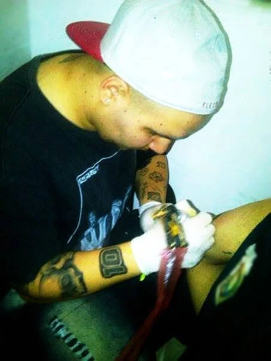

Trabajos
Lo último que subimos a @tatuajesneuron.

Hernán Solares Costa
Hernán tatúa hace 15 años. En 2017 abrió Tatuajes Neurón, el estudio donde hoy hace cada trabajo de principio a fin: desde la primera charla sobre tu idea hasta la última sesión.
- Experiencia
- 15 años
- Neurón
- Desde 2017
Dónde estamos
San Javier, Traslasierra
Córdoba, Argentina
Tatuador: Hernán Solares Costa
Trabajamos con turno. Mandanos tu idea por WhatsApp, con referencias, tamaño y zona del cuerpo, y coordinamos el día.